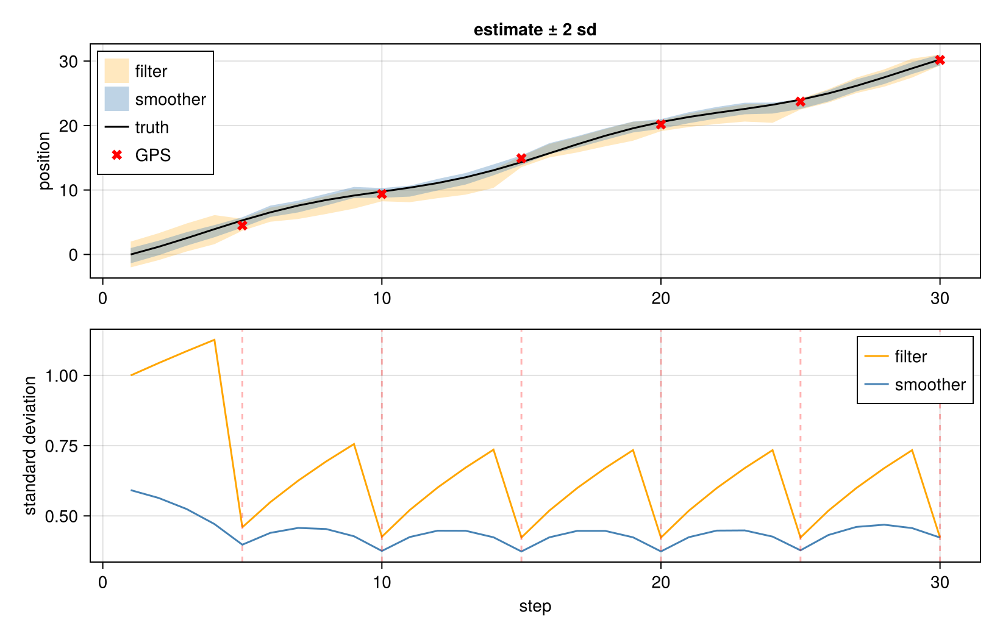
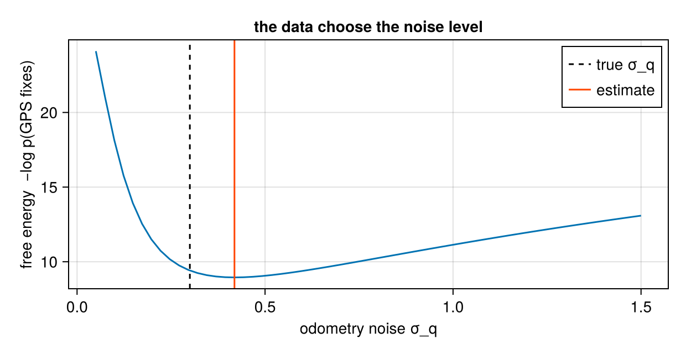

Localisation as a factor graph, for GTSAM readers
Download as a Jupyter notebook
A robot moves along a line, measures its own motion (odometry), and now and then gets a GPS fix. Where was it at each moment, and how sure can we be? This is the problem factor-graph libraries such as GTSAM open with (Dellaert and Kaess, 2017), and this tutorial solves it with Lenticulum, then goes one step further than the usual example: the odometry's noise level is unknown, and the graph estimates it from its own marginal likelihood.
Everything here is linear and Gaussian, so every answer is exact and is checked against a closed form. What Lenticulum cannot do yet for real robots is listed at the end.
using Lenticulum, LenticulumCore, Mycelium, LinearAlgebra, Random, Printf
using CairoMakie
using Mycelium: connect! # Makie exports a `connect!` too; we mean the graph oneFrom GTSAM to Lenticulum
| GTSAM | Lenticulum | here |
|---|---|---|
variable key, Values | a variable of the GraphBuilder (variable!) | poses :x1, :x2, … |
| noise model | the factor's noise covariance | odometry $\sigma_q^2$, GPS $\sigma_r^2$ |
PriorFactor | GaussianPrior | where the robot starts |
BetweenFactor | GaussianFactor with $A = I$ and the reading as offset $b$ | $x_{k+1} = x_k + u_k + \varepsilon$ |
GPSFactor | a GaussianFactor (the noise model) plus a DataFactor (the reading) | $z = x_k + \delta$ |
optimiser + Marginals | infer! with a schedule, then belief_mean, belief_cov | exact on a tree |
| — | scalar_free_energy: the negative log marginal likelihood | used to estimate $\sigma_q$ |
Two differences in design matter. A factor here is a relation whose direction is chosen by the query, so the same odometry factor carries information forwards (prediction) and backwards (smoothing). And a measurement is two pieces, noise model and reading, so the reading can be removed to predict it instead (see the end).
The robot
The true motion per step varies; odometry reports it with noise $\sigma_q = 0.3$; GPS fixes every fifth step have noise $\sigma_r = 0.5$.
const N = 30
const GPS_AT = 5:5:N
rng = Xoshiro(1)
true_steps = [1.0 + 0.4 * sin(0.5k) for k in 1:(N - 1)]
x_true = cumsum([0.0; true_steps])
σq_true, σr = 0.3, 0.5
odometry = true_steps .+ σq_true .* randn(rng, N - 1)
gps = Dict(k => x_true[k] + σr * randn(rng) for k in GPS_AT)Building the graph
One helper builds the graph for any set of poses and fixes, so the same code serves smoothing, filtering and noise estimation below. Each odometry reading becomes a GaussianFactor from $x_k$ to $x_{k+1}$ with $A = 1$ and offset $b = u_k$; each fix becomes a noise factor to an auxiliary variable :zk plus a DataFactor holding the reading.
function localisation_graph(n, fixes, σq; σr = σr, odometry = odometry, μ₀ = 0.0, σ₀² = 1.0)
b = GraphBuilder()
xs = [Symbol(:x, k) for k in 1:n]
foreach(x -> variable!(b, x, 1), xs)
factor!(b, :prior, GaussianPrior(:x1, [μ₀], fill(σ₀², 1, 1)))
connect!(b, :prior, :x1, :x1; direction = Bidirectional())
ps, st = Pair{Symbol,Any}[:prior => NamedTuple()], Pair{Symbol,Any}[:prior => NamedTuple()]
for k in 1:(n - 1)
f = Symbol(:odo, k)
factor!(b, f, GaussianFactor(1 => 1; noise = fill(σq^2, 1, 1), channels = (:x, :y)))
connect!(b, f, :x, xs[k]; direction = Bidirectional())
connect!(b, f, :y, xs[k + 1]; direction = Bidirectional())
push!(ps, f => (A = fill(1.0, 1, 1), b = [odometry[k]])); push!(st, f => NamedTuple())
end
for (k, z) in fixes
k ≤ n || continue
zk, gk, dk = Symbol(:z, k), Symbol(:gps, k), Symbol(:data, k)
variable!(b, zk, 1)
factor!(b, gk, GaussianFactor(1 => 1; noise = fill(σr^2, 1, 1), channels = (:x, :y)))
factor!(b, dk, DataFactor(zk, [z]))
connect!(b, gk, :x, xs[k]; direction = Bidirectional())
connect!(b, gk, :y, zk; direction = Bidirectional())
connect!(b, dk, zk, zk; direction = Emitting())
push!(ps, gk => (A = fill(1.0, 1, 1), b = [0.0]), dk => NamedTuple())
push!(st, gk => NamedTuple(), dk => NamedTuple())
end
return validate(build(b)), NamedTuple(ps), NamedTuple(st)
end
g, ps, st = localisation_graph(N, gps, σq_true)
istree(g)trueThe graph is a chain with fixes hanging off it, a tree, so two message sweeps give the exact posterior of every pose given all measurements: the smoothing answer (Rauch et al., 1965), what GTSAM's batch solver plus Marginals returns.
marg, report, st, store = infer!(g, tree_schedule(g), ps, st)
smooth_mean = [belief_mean(marg[Symbol(:x, k)])[1] for k in 1:N]
smooth_sd = [sqrt(belief_cov(marg[Symbol(:x, k)])[1]) for k in 1:N]
(converged = report.converged, rms_error = sqrt(sum(abs2, smooth_mean .- x_true) / N))(converged = true, rms_error = 0.30962648011286)Smoothing versus filtering
A filter (a Kalman filter (Kalman, 1960), or an incremental solver asked only for the newest pose) answers "where am I now, given everything so far". Running the same graph builder on the prefix up to each time gives exactly that.
filter_mean, filter_sd = zeros(N), zeros(N)
for t in 1:N
gt, pst, stt = localisation_graph(t, gps, σq_true)
mt, _, _, _ = infer!(gt, tree_schedule(gt), pst, stt)
filter_mean[t] = belief_mean(mt[Symbol(:x, t)])[1]
filter_sd[t] = sqrt(belief_cov(mt[Symbol(:x, t)])[1])
end
fig = Figure(size = (820, 520))
ax1 = Axis(fig[1, 1]; ylabel = "position", title = "estimate ± 2 sd")
band!(ax1, 1:N, filter_mean .- 2filter_sd, filter_mean .+ 2filter_sd; color = (:orange, 0.25), label = "filter")
band!(ax1, 1:N, smooth_mean .- 2smooth_sd, smooth_mean .+ 2smooth_sd; color = (:steelblue, 0.35), label = "smoother")
lines!(ax1, 1:N, x_true; color = :black, label = "truth")
scatter!(ax1, collect(GPS_AT), [gps[k] for k in GPS_AT]; color = :red, marker = :xcross, markersize = 12, label = "GPS")
axislegend(ax1; position = :lt)
ax2 = Axis(fig[2, 1]; xlabel = "step", ylabel = "standard deviation")
lines!(ax2, 1:N, filter_sd; color = :orange, label = "filter")
lines!(ax2, 1:N, smooth_sd; color = :steelblue, label = "smoother")
vlines!(ax2, collect(GPS_AT); color = (:red, 0.3), linestyle = :dash)
axislegend(ax2; position = :rt)
fig
Between fixes the filter's uncertainty grows like a random walk, $\sigma_q\sqrt{\text{steps}}$, and collapses at each fix. The smoother's is smaller everywhere and largest halfway between fixes, because information arrives from both sides: the odometry factors carry the next fix backwards in time. That backward flow is each factor queried in the opposite direction to the one it was written in, which is what makes a factor a relation rather than a function.
Unknown noise: the graph estimates it
In practice $\sigma_q$ is rarely known. The graph computes its own free energy, the negative log marginal likelihood of all measurements, $-\log p(z_{5}, z_{10}, \dots \mid \sigma_q)$. Treating $\sigma_q$ as unknown and minimising the free energy is maximum-likelihood estimation of the noise model (type-II maximum likelihood), with no ground truth needed.
function free_energy(σq)
gσ, psσ, stσ = localisation_graph(N, gps, σq)
_, _, stσ, storeσ = infer!(gσ, tree_schedule(gσ), psσ, stσ)
return first(LenticulumCore.scalar_free_energy(storeσ, gσ, psσ, stσ))
endfree_energy (generic function with 1 method)First a check against the closed form. The fixes are jointly Gaussian: the mean is the prior pushed along the odometry, and the covariance of poses $i, j$ is $\sigma_0^2 + \sigma_q^2(\min(i,j) - 1)$.
function closed_form(σq; σ₀² = 1.0)
ks = collect(GPS_AT)
mean_x = cumsum([0.0; odometry])
S = [σ₀² + σq^2 * (min(i, j) - 1) for i in ks, j in ks] + σr^2 * I
d = [gps[k] for k in ks] .- mean_x[ks]
return (length(ks) * log(2π) + logdet(S) + d' * (S \ d)) / 2
end
(graph = free_energy(0.3), closed_form = closed_form(0.3))(graph = 9.412282490029893, closed_form = 9.412282490029913)Now the estimate: scan $\sigma_q$ and take the minimiser.
σs = range(0.05, 1.5; length = 60)
F = free_energy.(σs)
σ_hat = σs[argmin(F)]
fig = Figure(size = (620, 320))
ax = Axis(fig[1, 1]; xlabel = "odometry noise σ_q", ylabel = "free energy −log p(GPS fixes)",
title = "the data choose the noise level")
lines!(ax, σs, F)
vlines!(ax, [σq_true]; color = :black, linestyle = :dash, label = "true σ_q")
vlines!(ax, [σ_hat]; color = :orangered, label = "estimate")
axislegend(ax; position = :rt)
fig
The minimiser, against the value used to simulate the data:
(estimate = σ_hat, truth = σq_true)(estimate = 0.4186440677966102, truth = 0.3)With six fixes the likelihood is broad: many noise levels explain six numbers about equally well, so the estimate is rough. More fixes, or a second robot sharing the same odometry model, sharpen it. The point is the mechanism: the factor graph scores its own noise model, and the same number would compare a Gaussian odometry model against a heavy-tailed one, once non-Gaussian factors exist.
The same factor, the other way round
Nothing about a GPS factor says it is a measurement. Leave out the reading of the last fix and the graph predicts it, with the uncertainty accumulated along the chain:
fixes_without_last = Dict(k => gps[k] for k in GPS_AT if k != N)
function predict_last()
g0, ps0, st0 = localisation_graph(N, fixes_without_last, σq_true)
m0, _, _, _ = infer!(g0, tree_schedule(g0), ps0, st0)
x = m0[Symbol(:x, N)]
return (predicted_position = belief_mean(x)[1], sd = sqrt(belief_cov(x)[1]),
predicted_reading_sd = sqrt(belief_cov(x)[1] + σr^2), actual_reading = gps[N])
end
predict_last()(predicted_position = 30.171482997828022, sd = 0.7930250257130731, predicted_reading_sd = 0.9374906353704128, actual_reading = 30.17371118901871)The predicted reading's standard deviation adds the GPS noise to the pose uncertainty. Clamping the reading turns the same factors back into a correction.
What Lenticulum does not do yet, for real robots
This example is linear and Gaussian, which is why every number above is exact. A real robot needs:
- nonlinear factors on poses in $SE(2)$ or $SE(3)$, solved by Gauss–Newton or Levenberg–Marquardt on the manifold (what GTSAM is built for);
- loop closures, which make the graph loopy, where two sweeps are no longer exact;
- robust or learned noise models: heavy tails, outliers, and noise whose distribution is unknown rather than a known Gaussian;
- learned motion models, e.g. odometry from motor commands, as factors whose parameters are trained jointly with the trajectory.
The last two are where Lenticulum aims to differ from GTSAM: factors that are learned relations with non-Gaussian beliefs, scored by the same free energy used above. The vault's notes SLAM and Sensor Fusion and The Linear Gaussian Chain go further.
References
- Dellaert, F. and Kaess, M. (2017). Factor Graphs for Robot Perception (Now Publishers).
- Kalman, R. E. (1960). A New Approach to Linear Filtering and Prediction Problems. Journal of Basic Engineering 82, 35–45.
- Rauch, H. E.; Tung, F. and Striebel, C. T. (1965). Maximum likelihood estimates of linear dynamic systems. AIAA Journal 3, 1445–1450.
This page was generated using Literate.jl.